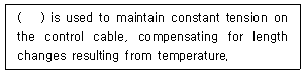
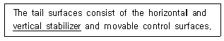
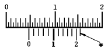
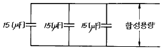

항공장비정비기능사 (2004-04-04 기출문제)
1과목: 비행원리
1. 비행기가 수평선과 읨의 각으로 상승비행하고 있다고 하면 힘의 평형식은 진행방향에 대하여 어떤 식으로 나타나는가? (단, T : 추력, W : 비행기의 무게, D : 항력)
- D = T sinθ + W
- W = T sinθ + D
- T = W sinθ + D
- sinθ = T D + W
(정답률: 78%)

2. 헬리콥터가 공중에 뜰 수 있다는 것을 처음 밝힌 사람은 누구인가?
- 레오나르도다빈치
- 케일리
- 코르뉘
- 시크르스키
(정답률: 88%)
3. 비압축성 유체의 흐름에서 연속 방정식에 대한 설명으로 가장 올바른 것은?
- 관의 단면적과 유체의 속도는 반비례한다.
- 관을 통과하는 유량과 유체의 속도는 반비례한다.
- 관의 단면적이 증가하면 유체의 속도는 증가한다.
- 관속 유체의 밀도가 감소하면 속도가 감소한다.
(정답률: 66%)
4. 활공기가 고도 1000m에서 20㎞의 수평활공 거리를 활공할 때 양항비는 얼마인가?
- 0.2
- 2
- 20
- 50
(정답률: 65%)
5. 비행기가 정상선회를 하기 위해서는 어떻게 하여야 하는가?
- 원심력과 구심력은 크기가 같고 방향이 반대이어야 한다.
- 원심력과 구심력은 크기가 같고 방향도 같아야 한다.
- 원심력과 구심력은 크기가 다르고 방향이 반대이어야 한다.
- 원심력과 구심력은 크기가 다르고 방향이 같아야 한다.
(정답률: 78%)
6. 비행기의 정적가로안정을 가장 좋게하기 위한 방법은 무엇인가?
- 동체를 원형으로 만든다.
- 쳐든각 날개를 단다.
- 꼬리날개를 작게 한다.
- 날개의 모양을 원형으로 한다.
(정답률: 92%)
7. 헬리콥터에서 균형의 의미로서 가장 올바른 설명 내용은?
- 직교하는 2개의 축에 대하여 힘의 합이"0" 이 되는것
- 직교하는 2개의 축에 대하여 모멘트의 합이 각각 "0"이 되는것
- 직교하는 3개의 축에 대하여 힘과 모멘트의 합이 각각 "0" 이 되는것
- 직교하는 3개의 축에 대하여 모든 방향의 힘의 합이 "0" 이 되는것
(정답률: 83%)
8. 크루거 플랩에 대한 설명중 잘못된 것은?
- 기구가 복잡하고 작동장치가 크다.
- 소형 항공기에는 별로 사용하지 않는다.
- 공기역학적으로 슬롯 등과 같은 효과를 갖는다.
- 앞전 플랩에 일반적으로 사용된다.
(정답률: 55%)
9. 유체흐름의 천이현상과 가장 관계가 적은 것은?
- 유체의흐름 속도
- 유체의 점성계수
- 유체의 온도
- 흐름에 놓여있는 물체의 형상
(정답률: 58%)
10. 고속 비행기의 날개로 적합하지 않은 것은?
- 뒤젖힘 날개
- 삼각날개
- 사각날개
- 오지날개
(정답률: 84%)
11. 천음속 비행시 날개에 이상 진동이 발생하는 현상은?
- 시미(shimmy) 현상
- 더치롤(dutch roll) 현상
- 턱언더(tuck under) 현상
- 버페팅(buffeting) 현상
(정답률: 71%)
12. NACA 24120 에 대한 설명중 가장 올바른 것은?
- 첫자리 숫자 및 셋째자리 숫자가 의미하는 것은 4자 계열과 같다.
- 마지막 두자리 숫자가 의미하는 것은 4자 계열과 다르다.
- 평균캠버선의 뒤쪽 반이 곡선이다.
- 최대두께가 시위의 10 %이다.
(정답률: 61%)
13. 비행기에서 실용상승한계는 상승률이 얼마인 경우인가?
- 0 m/s 일 때의 고도
- 0.5 m/s 일 때의 고도
- 1.0 m/s 일 때의 고도
- 1.5 m/s 일 때의 고도
(정답률: 65%)
14. 항공기에서 큰 날개에 부착되는 조종면은 어느 것인가?
- 승강키
- 방향키
- 도움날개
- 태브
(정답률: 82%)
15. 주회전날개(main rotor)가 회전함에 따라 발생되는 반작용 토크를 상쇄하기 위하여 꼬리회전날개(tail rotor)가 필요한 헬리콥터는?
- 단일회전날개 헬리콥터
- 직렬식 헬리콥터
- 동축역회전식 헬리콥터
- 병렬식 헬리콥터
(정답률: 69%)
16. 항공기의 중요부품은 일정한 작동시간에 도달하면 항공기에서 장탈하여 오버홀(overhaul)하여야 다시 사용할 수 있다. 일정한 작동시간을 정한 규정은?
- 항공법
- 정비규정
- 시행규칙
- 정비업무규칙
(정답률: 80%)
17. 항공기와 그 부품, 장비의 손상 및 기능불량 등을 원래의 상태로 회복시키는 작업은?
- 경미한 보수
- 일반적인 보수
- 개조
- 수리
(정답률: 92%)
18. 외측 마이크로미터의 각부 기능을 설명한 것으로 가장 올바른 것은?
- 앤빌과 스핀들은 마이크로미터를 보관할 때 0점 조정을 위해 사용
- 클램프와 슬리브 사이에는 측정물을 끼워 넣을 수 있도록 되어있다.
- 래치스톱은 측정력 이상의 힘이 작용되면 공회전 하도록 되어있다.
- 래치노브는 심블의 안쪽둘레에 설치되어 있다.
(정답률: 64%)
19. 리벳(Rivet)작업에 있어서 리벳(Rivet)직경을 D라고 했을 때, 리벳의 최소 끝 거리는 얼마인가?
- 2D
- 4D
- 12D
- 22D
(정답률: 67%)
20. 용접하기전에 알루미늄을 미리 가열하는 가장 큰 이유는?
- 팽창효과를 감소시키기 위해
- 산화막을 태워버리기 위해
- 용접면이 용제를 받아들일 준비를 하기위하여
- 용접하기전에 가열되는 것을 막기위하여
(정답률: 57%)
2과목: 항공기정비
21. AN315D-5R너트의 규격을 식별하는 방법에서 5의 의미는?
- 사용 볼트의 재질
- 사용 볼트의 지름
- 사용 볼트의 길이
- 사용 볼트의 나사산
(정답률: 56%)
22. 검출하기 쉬운 결함 방향에 대한 설명 중 틀린 것은?
- 자분탐상검사:자속과 직각방향
- 초음파검사:초음파 진행방향과 평행한 방향
- 와전류검사:소용돌이 전류흐름을 차단하는 방향
- 방사선검사:방사선 진행방향과 평행한 방향
(정답률: 49%)
23. 간접 육안검사(Visual Inspection)용 장비가 아닌 것은?
- 카메라
- 검사용 거울
- 확대경
- 블랙 라이트
(정답률: 74%)
24. 항공기 세척제 중 그리이스, 오일, 타르(Tar) 등과 같은 것이 심하게 오염된 부분을 제거하는데 특히 유용한 것은?
- 워터 에멀션 세척제(Water emulsion cleaner)
- 솔벤트 에멀션 세척제(Solvent emulsion cleaner)
- 세척용 컴파운드(Cleaning compound)
- 중조(Baking soda)
(정답률: 84%)
25. 공항 시설물과 각종 장비에는 안전색채가 표시되어 사고를 미연에 방지한다. 녹색의 안전색채 표시는 어떤 의미를 나타내는가?
- 검사중인 장비
- 응급처치장비
- 보일러
- 전원스위치
(정답률: 85%)
26. 다음 ( ) 안에 알맞는 말은?

- Turnbuckle
- Tension regulator
- Pully
- Tension meter
(정답률: 59%)
27. 밑줄친 부분을 의미하는 올바른 단어는?

- 수평안정판
- 수직안정판
- 수직축
- 수평축
(정답률: 82%)
28. 최소 측정값이 1/50 mm인 버니어 캘리퍼스에서 다음 그림의 측정값은 얼마인가?

- 4.52
- 4.70
- 4.72
- 4.75
(정답률: 80%)
29. 비파괴 검사법 중 안전에 가장 철저한 관리가 요구되는 검사법은?
- 와전류 검사
- 방사선 투과 검사
- 침투탐상 검사
- 자분탐상 검사
(정답률: 80%)
30. 나사산에 기름이나 그리스가 묻어있을 경우 볼트의 조임 상태는 어떠한가?
- 과소 토큐
- 정확한 토큐
- 드라이 토큐
- 과다 토큐
(정답률: 85%)
31. 항공기가 이륙하여 착륙할 때 까지의 시간으로 정비분야에서 사용하는 시간은?
- 운항시간
- 비행시간
- 실제비행시간
- 사용시간
(정답률: 50%)
32. 항공기 견인 속도가 틀린 것은?
- 시속 8km이다.
- 보행 속도이다.
- 5mph이다.
- 시속 10km이다.
(정답률: 82%)
33. C급 화재시 사용되는 소화기 중 가장 알맞은 것은?
- CO2소화기, CBM 소화기
- CBM 소화기, 소화전 소화기
- form 소화기, 분말 소화기
- 소화전 소화기, 분말 소화기
(정답률: 77%)
34. 항공기에 급유 또는 배유 시에는 반드시 정전기로 인한 화재를 예방하기 위하여 3점 접지를 해야한다. 3점 접지와 관계 없는 것은?
- 항공기와 사람
- 항공기와 연료차
- 항공기와 지면
- 연료차와 지면
(정답률: 87%)
35. 항공기를 정비하거나 검사할 때 점검창(access panel)을 신속하고 용이하게 열고 닫을 수 있는 기능을 하는 특수고정 부품은 어느 것인가?
- 턴 로크 패스너
- 고전단 리벳
- 고정 볼트
- 조볼트
(정답률: 77%)
36. 그림과 같이 15㎌의 콘덴서를 3개 병렬 연결했을 때의 합성용량은 몇㎌인가?

- 50
- 45
- 15
- 4.5
(정답률: 89%)
37. 교류의 실효값에 대한 설명으로 가장 올바른 것은?
- 같은 열을 발생시키는 직류의 값
- 평균 주파수에 의한 값
- 최대값의 1/2
- 위상차를 무시한 값
(정답률: 42%)
38. 다음은 회로 차단기의 표시 그림이다. 그림의 표시 방법은 어떤 형의 회로차단기 인가?
- 푸시형(Push-breaker)
- 푸시풀형(Push-pull breaker)
- 스위치형(Switch breaker)
- 자동재접속형(Automatic reset breaker)
(정답률: 60%)
39. 도체(conductor)내에서 전류의 흐름을 방해하는 성질을 무엇이라 하는가?
- 기전력
- 전류
- 저항
- 전력
(정답률: 84%)
40. 전기적으로 직접 연결되어 있지 않은 2개의 코일과 그 코일이 감겨져 있는 철심으로 구성되어 전압을 올리거나 내려주는 장치는 어느 것인가?
- 정류기
- 인버어터
- 변압기
- 변류기
(정답률: 75%)
3과목: 항공장비
41. 발전기의 출력쪽과 버스 사이에 장착하여 발전기의 출력 전압이 낮을 때 축전지로 부터 발전기로 전류가 역류하는 것을 방지하는 장치는?
- 역전류 차단기
- 보극
- 전압 조절기
- 정속구동장치
(정답률: 88%)
42. 열전쌍식 온도계에 사용되는 열전쌍의 재료 중 적당하지 않은 것은?
- 티타늄 - 구리
- 크로멜 - 알루멜
- 철 - 콘스탄탄
- 구리 - 콘스탄탄
(정답률: 63%)
43. 항공기의 고도를 구분할 때 해면상으로 부터의 고도를 무엇이라 하는가?
- 진고도
- 절대고도
- 기압고도
- 밀도고도
(정답률: 68%)
44. 자기콤파스 주위의 자성체 및 전기기기의 영향으로 생기는 오차를 보정해 주는 작업은?
- 자이로 수정
- 콤파스 수정
- 자기 수정
- 자차 수정
(정답률: 62%)
45. 기본적인 유압계통 중 핸드펌프에서 선택밸브 까지의 계통은?
- 공급계통
- 작동계통
- 비상계통
- 귀환계통
(정답률: 57%)
46. 항공기 계통에서 사용되고 있는 작동유 튜브(Tube)의 Flaring 각도에서 표준이 되는 것은?
- 15°
- 37°
- 50°
- 74°
(정답률: 61%)
47. 윈드 시일드 패널(Windshield panel)의 외측판 안쪽면에 붙어 있는 금속산화피막(Nesa)의 기능에 관한 설명 내용으로 가장 올바른 것은?
- 윈드 시일드의 방빙(Anti - Icing) 및 서리 제거(Anti - Fog)를 위한 것이다.
- 윈드 시일드 패널이 여압 압력에 견디도록 해주는 보강막이다.
- 비행중 새등의 충돌로부터 윈드 시일드를 보호해주기 위한 막이다.
- 동체와 윈드 시일드 사이의 틈새로 여압 공기가 새는 것을 방지하기 위한 막이다.
(정답률: 56%)
48. 압축공기에 의한 제빙계통의 구성요소가 아닌 것은?
- 가압진공펌프
- 가압 - 진공 릴리이프 밸브
- 윈드 시일드
- 싸이클 타이머
(정답률: 65%)
49. 자이로의 섭동성이란?
- 자이로에 외력을 가하지 않는한 일정한 자세를 유지하는 성질
- 자이로에 외력을 가하면 그 힘의 방향으로 자세가 변하는 성질
- 자이로에 외력을 가하면 가한 점으로부터 회전방향으로 90도 진행된 점에 작용하는 성질
- 자이로에 외력을 가하면 방향, 자세가 변하지 않는 성질
(정답률: 59%)
50. 축전지에서 발전기로 전류가 흐르는 것을 차단하는 장치는?
- 전압조절기
- 역전류 차단기
- 정속구동장치
- 정류기
(정답률: 79%)
51. 객실 고도(Cabin Altitude)란?
- 실제 비행하는 고도
- 절대고도
- 밀도고도
- 객실내의 기압에 해당되는 고도
(정답률: 92%)
52. 지상에서 항공기에 장착된 Generator(제너레이터)가 가동되지 않을 때 항공기 전기계통의 작동을 위해 항공기에 400Hz, 115/200V, AC Power(파워)를 공급하는 장비는?
- G.T.C(Gas Turbine Compressor)
- G.P.U(Ground Power Unit)
- HT-LIFT CAR(하이 리프트 카)
- HEATER(히이터)
(정답률: 92%)
53. 보조동력장치(APU)가 자동 정지되는 원인이 아닌 것은?
- APU의 화재 발생시
- 배기가스 온도 한계치 초과시
- 냉각팬 공기 흡입구가 크게 열릴 때
- 밧데리 전압 저하시
(정답률: 63%)
54. 다음 중 자이로의 편위(drift)와 가장 거리가 먼 것은?
- 랜덤 편위
- 지구의 자전에 의한 편위
- 로터의 회전수
- 이동에 의한 편위
(정답률: 43%)
55. 열팽창 계수가 각각 다른 2개의 금속조각을 서로 맞붙여 놓으면 온도변화에 따라 팽창에 차이가 생기게 되는데, 이 때의 변위량으로 온도를 측정하는 것은?
- 증기압식 온도계
- 전기저항식 온도계
- 바이메탈식 온도계
- 열전쌍식 온도계
(정답률: 74%)
56. 정압튜브(Static Pressure Source)를 동체 양쪽에 두는 가장 큰 이유는?
- 배관에 소요되는 튜브(Tube)재료를 적게 들이기 위하여
- 결빙 예방책
- 선회시 오차를 적게하기 위하여
- 피이토우-튜브(Pitot-Tube)는 장착오차가 없으므로
(정답률: 72%)
57. 엔진이 작동하지 않을 때 왕복엔진 다기관 압력게이지가 지시하는 값은?
- 다기관 압력과 대기압의 차이
- 현재의 대기압
- 영압(Zero Pressure)
- 수정된 차압
(정답률: 49%)
58. 항공기의 착륙시에 바퀴의 회전수를 수감하여 제동시에 바퀴의 미끄러짐 현상을 최소화하여 브레이크 제동효율을 높이는 계통은?
- 독립브레이크 계통
- 비상 브레이크 계통
- 안티스키드 계통
- 노즈 스티어링 계통
(정답률: 85%)
59. 공기압 계통에서 공기 실린더 내부에 있는 스택 파이프(Stack pipe)의 기능은?
- 항공기관이 작동하지 않을 때 계통에 공기를 공급 한다.
- 지상에서 공기를 보급시킬 때 사용된다.
- 수분이나 윤활유가 계통으로 섞여 나가지 않도록 한다.
- 압력 서어지 현상을 방지한다.
(정답률: 52%)
60. 유압계통 펌프의 공급관이나 출구쪽에 거품이 생기면 공기가 섞인 작동유를 저장 탱크로 되돌아가게 하는 밸브는?
- 릴리이프 밸브
- 프라이오리티 밸브
- 퍼어지 밸브
- 디부우스터 밸브
(정답률: 42%)
T - Dsinθ = Wcosθ
여기서, 비행기가 수평선과 읨의 각으로 상승비행하고 있으므로, 수직 방향으로의 힘의 합력은 Wsinθ입니다. 따라서, 위의 식을 sinθ로 나누면 다음과 같습니다.
Tsinθ - D = Wcosθsinθ
여기서, cosθsinθ = sin2θ 이므로, 다음과 같이 정리할 수 있습니다.
Tsinθ = Wsinθ + Dsinθ
따라서, T = Wsinθ + D가 됩니다.